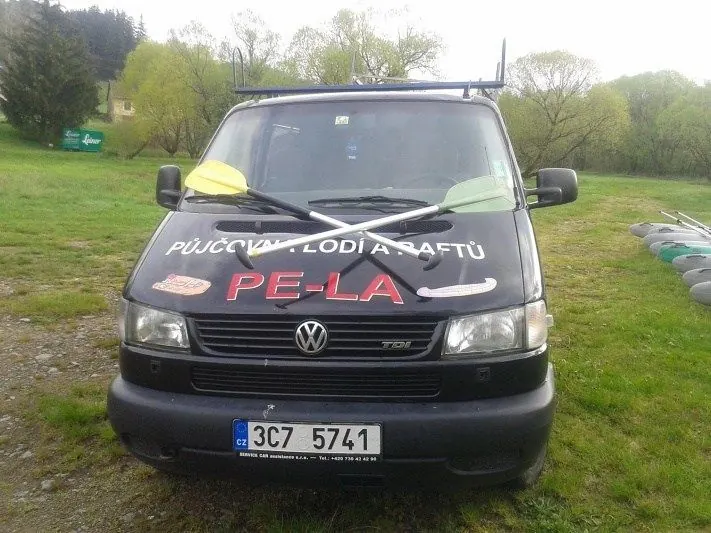

Půjčovna lodí na Vltavě
Kanoe, rafty a kompletní vodácké vybavení. Odvezeme vás i lodě zpět na místo vyplutí – vy si jen užijte řeku.
Vyberte si plavidlo
Ahoj! Půjčovna lodí a raftů PE-LA vám již od roku 1993 nabízí komplexní vodácké služby na řece Vltavě na jihu Čech. Zabezpečíme rodinné, školní i firemní výlety.


Přespěte v kempu, ráno na vodu.
Půjčovna PE-LA sídlí přímo v Kempu Krumlov u Vltavy – v kempu nejblíže centru Českého Krumlova. Přespěte ve stanu, chatce nebo teepee a ráno vyplujte. Za vodou, pohodou a kempovou atmosférou.
- Ubytujete sev Kempu Krumlov u Vltavy
- Ráno vyplujeteloď si vyzvednete přímo v kempu
- Odvezeme vás zpěti s loděmi a bagáží

Nově půjčujeme lodě v Hamru u Dívčího Kamene!
Užijte si plavbu po Vltavě s loděmi od Kempu Krumlov (PE-LA) a pohodlné ubytování přímo v Hamru. Příroda, klid a voda na dosah!
Jasné ceny, žádná překvapení
Všechny možnosti na jednom místě: doprava osob autem, nebo samotné lodě na jeden či více dní.
Doprava osob
Cena za auto pro 8 osob podle místa vyplutí
Půjčení lodí bez dopravy osob
Porovnejte jednodenní a vícedenní půjčení
| Loď | 2 Jednodenní | 3 Vícedenní |
|---|---|---|
| Kanoe2–3 osoby | 700 Kč/ den | 500 Kč/ den |
| Raft3–4 osoby | 1 250 Kč/ den | 950 Kč/ den |
| Raft5–6 osob | 1 600 Kč/ den | 1 400 Kč/ den |
| Raft8 osob | 1 800 Kč/ den | 1 600 Kč/ den |
| Baraka2 osoby | 750 Kč/ den | 550 Kč/ den |
Jednorázový poplatek za návoz lodí není zahrnut v ceně půjčení.

Odvezeme vás i lodě
Nemusíte řešit, jak se vrátit k autu. Postaráme se o přepravu lidí, lodí i bagáže.
Zpět na místo vyplutí
Doprava osob a zapůjčených věcí zpět na místo, odkud jste vypluli.
Lipno – Vyšší Brod
Doprava osob, lodí a bagáže z Lipna do Vyššího Brodu.
Momenty z řeky
Peřeje, jezy, partičky i klidné úseky. Takhle to vypadá, když se vyrazí s PE-LA.
Než vyplujete
Odpovědi na to, na co se nás vodáci ptají nejčastěji. Nenašli jste svou otázku? Zavolejte nám.
725 336 601Co je zahrnuto v ceně půjčení lodi?
Ke každé lodi a raftu dostanete pádla, plovací vesty a konve (barely), případně pumpu na dofouknutí raftu. Při objednání dopravy osob je v ceně i doprava osob a plavidel zpět na místo vyplutí.
Kdy má půjčovna otevřeno?
Půjčovna je v provozu od května do září, denně od 9:00 do 19:00. Rezervace přijímáme e-mailem, telefonem nebo přes formulář na webu.
Odkud a kam můžeme na Vltavě vyplout?
Návoz a vyzvednutí zajistíme na místech Vyšší Brod, Rožmberk nad Vltavou, Nahořany, Kemp Vltava, Viking / Pískárna, Vltavan / Spolí, Centrum Českého Krumlova, Zlatá Koruna a Boršov.
Kolik stojí doprava osob?
Cena za auto pro 8 osob se řídí místem vyplutí – od 250 Kč (Centrum) po 1 150 Kč (Vyšší Brod). Kompletní přehled najdete v ceníku.
Máte slevy pro skupiny nebo na delší půjčení?
Ano. Při půjčení lodi na 3 a více dní máte slevu 15 %. Pro skupiny od 20 osob je organizátor zdarma.
Jakou loď zvolit pro začátečníky nebo rodinu s dětmi?
Nafukovací kanoe Pálava je díky své stabilitě vhodná i pro začínající vodáky. Kanoe Vydra je nejrozšířenější lodí pro rodinnou vodní turistiku a Tukan pojme i třetí osobu nebo psa. Pro větší skupiny doporučujeme rafty Bajkal (4 osoby) nebo Colorado (6 osob).
Zajistíte převoz přes Lipno?
Ano, zajišťujeme dopravu osob, lodí a bagáže z Lipna do Vyššího Brodu.
Jak si loď zarezervovat?
Vyplňte rezervační formulář nebo nám zavolejte na +420 725 336 601. Uveďte datum, místo a čas, typ lodě, počet osob a případně požadavek na dopravu osob.
Vyplujte s námi.
Napište nám, kdy a kam chcete vyrazit. Ozveme se s potvrzením a domluvíme návoz lodí i dopravu osob.
Nezávazná rezervace
Do zprávy prosím uveďte datum, místo a čas, typ lodě, počet osob, případně dopravu osob.
Děkujeme!
Vaše rezervace byla odeslána. Brzy se vám ozveme.